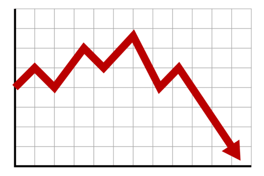

Aspire Finance
“The Texas Financial Literacy rate is slowly declining compared to the US Financial Literacy rates as other states in
the US such as Minnesota and Wyoming have very high financial literacy rates as they started to improve standards
on financial education, but Texas has not adapted to the change and has not started prioritizing financial education
as a result showcasing declining Financial literacy rates.” - Federal Reserve Bank of Texas

Understanding the concept of utilizing and managing money and taking care of money without going into severe financial debt
is a hard task to process among multiple college students. So one of our main project goal is to simplify the understanding
of all these concepts with the help of charts all around the school showcasing meaningful financial literacy terms in a simple
manner, and also putting in place in person seminars to create discussion among students to help them gain a better understanding
of each financial literacy topic. This will help all students going to college clearly understand how to plan and manage their
money.
Grow an audience in school clubs with different activities such(Kahoots and Gimkits) and use these activities and different lesson plans to teach 20 members each session and instruct them about new unique key financial terms that help them build a great understandings about managing debt and utilizing budgets in a uncomplicated manner.
Innovate by creating a website and board games to help engage the student audience. We aim to have 40 people visit and engage with our website, and 20 people play and enjoy our board games. These innovations will help students with financial literacy.